2024.10
The **** is an experiential website that puts visitors in the position of an
anonymous spectator. A virtual forum hosts a series of violent events;
visitors can support, oppose, or simply watch — and their silent choices,
collected in the background, shape both the story and the dataset behind
it.
The project takes inspiration from the
Roman Colosseum, where gladiatorial contests
turned violence into spectacle. Placed in the role of "spectator,"
audiences gradually grew assimilated to cruelty — a dynamic echoed in the
modern bystander effect, where the presence
of others makes individuals less likely to intervene during an emergency.
A website was chosen as the medium because online spaces today carry the
same conditions: anonymity, distance, and an audience. By offering a
"safe," consequence-free environment, the project observes how people
actually choose when no one is watching them watch.
The **** is less a story and more a mirror. By stripping away identity and
consequence, it asks a single question:
when no one is watching, what do we choose to
watch?
Medium: experiential website, HTML, CSS, JavaScript, SVG filters
Keywords: web art, critical design, bystander effect, anonymity,
experiential interaction, behavioral data
